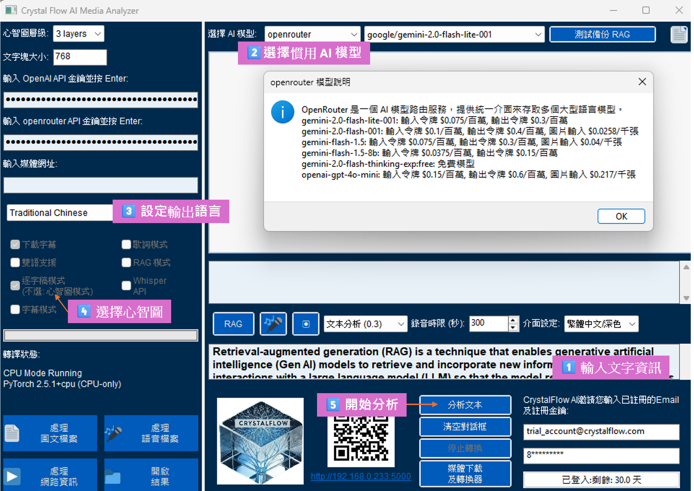
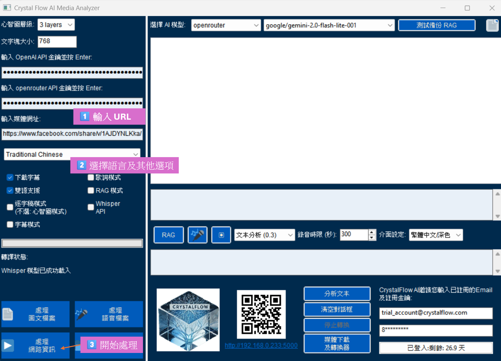

第二章：操作流程指南
2.1 基本文字處理

圖2-1：文字處理流程示意圖
- 在緊鄰[QRcode]上方的對話框輸入要處理的文字
- 任意文檔擷取文字內容貼入對話框
- 輸入錯誤可以使用 [清空對話框] 按鍵,重新輸入
- 選擇 AI 模型
- 選擇適合的模型類型,參考第3章 AI模型設定OpenRouter API金鑰指南
- 確認 API 金鑰設定
- 設定[心智圖層級]
- 預設值：3 layers
- 如果需要原文摘要,可以選擇 4 layers
- 選擇[逐字稿模式]來修改文法及段落標點, 或是取消逐字稿而使用[心智圖模式] 組織文字架構
- 如果輸入是歌詞, 請加選[歌詞模式]
- 點擊 [分析文本] 開始處理
- 等待處理完成
- 查看生成結果
2.1.1 基本文字處理功能展示
範例：創新者特質分析
以下是使用 Crystal Flow AI Media Analyzer 處理中英雙語文本的結果展示：
- 思維導圖版本 - 互動式心智圖，可展開/收合不同層級，支援內容選擇功能
- Markdown 格式版本 - 結構化文本展示，適合閱讀和複製
功能特點：
- 支援中英雙語內容並列顯示
- 自動生成多層次結構化內容
- 提供思維導圖與文本兩種呈現方式
- 內建內容選擇與導出功能
- 響應式設計，支援各種設備查看
思維導圖控制功能說明 連結心智圖實例
右上角控制項：
-
Level 選擇器：控制思維導圖的展開層級
- Level 1：只顯示最上層主題
- Level 2：顯示到第二層子主題(預設)
- Level 3：顯示到第三層子主題
- Level 4：顯示到第四層子主題
- All：完整展開所有層級
- Save Checked Items：將已勾選的項目儲存為 Markdown 文件
右下角控制項：
-
markmap 工具列：
- ➕ (放大)：放大視圖
- ➖ (縮小)：縮小視圖
- (全螢幕)：切換全螢幕模式
使用建議：
- 初次查看時建議從 Level 2 開始，逐步展開更多層級
- 可使用放大/縮小按鈕調整最佳觀看大小
- 選取重要內容後可使用 Save Checked Items 功能保存
- 全螢幕模式適合進行簡報或詳細研讀
2.2 影片處理流程

圖2-2：影片處理流程示意圖
- 輸入影片 URL
- 支援 YouTube、Facebook 等平台
- 確保影片連結可正常訪問
- 選擇是否需要下載字幕
- 自動檢測可用字幕
- 選擇字幕語言
- 選擇處理語言
- 支援多種語言選項
- 可選擇保持原始語言
- 等待下載和處理完成
- 觀察進度指示
- 等待系統通知
- 查看生成的心智圖和文字摘要
- 等待Markdown格式及心智圖格式處理結果自動在瀏覽器中顯示
2.3 錄音功能使用

圖2-3：錄音功能操作介面
- 設定錄音時間（預設 300 秒）
- 可自訂錄音時長
- 注意系統資源限制
- 選擇錄音模式：
- 即時錄音：
- 直接轉換為文字
- 適合快速處理
- 背景錄音：
- 儲存後再處理
- 適合長時間錄製
- 即時錄音：
- 開始/停止錄音
- 觀察錄音狀態指示
- 注意剩餘時間顯示
- 等待處理完成
- 查看轉換進度
- 確認輸出結果
實用提示
- 處理前檢查：
- 確認網路連接穩定
- 檢查系統音訊設定
- 確保儲存空間充足
- 效能優化：
- 關閉不必要的應用程式
- 避免同時進行多項處理
- 定期清理暫存檔案
- 結果管理：
- 建立合適的檔案命名規則
- 定期整理輸出檔案
- 重要資料及時備份